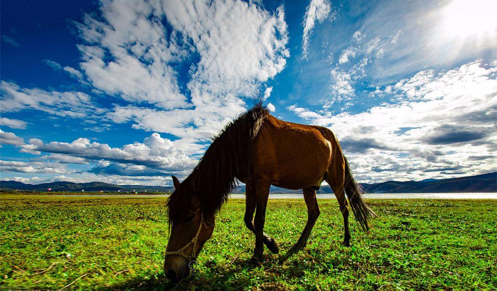
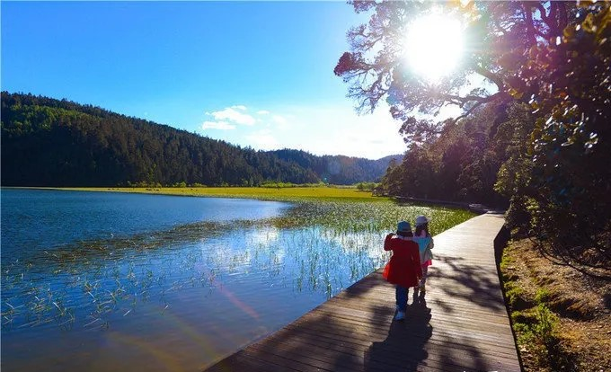

你了解香格里拉吗?
香格里拉原名中甸县，因与詹姆斯希尔顿的小说《消失的地平线》中描述的世外桃源极其相似而易名为香格里拉。
在当地藏语中，香格里拉意为：心中的日月。
香格里拉位于云南省西北部的滇、川、藏“大三角”区域，地处迪庆藏族自治州腹心地带，是一片世间少有的完美保留自然生态和民族传统文化的净土。
就像《消失的地平线》里描述的一样：一个永恒、和平、宁静之地。这里有四面雪山环绕的草原，阳光灿烂，空气新鲜，
有高深莫测的活佛，神圣静谧的湖水，金碧辉煌的寺庙和淳朴善良的康巴藏族。一切都如人们梦想中的伊甸园一般，据说生命在此可以得到永生……

关于香格里拉:
很多人对云南旅游的定义就是“游山玩水”。但是唯独对云南的香格里拉有一种别样的、不同于“游山玩水”的定义。
都说香格里拉是“离天堂最近”的地方。这样的说法也在一定程度上给香格里拉披上了一层神秘的面纱...
也因为香格里拉属于藏区，所以这个地方相比于丽江、大理、版纳等地来说，有了很多与众不同的地方...
很多人慕名而来可能是因为在中对这个藏区一种好奇，也可能是因为自己心中虔诚的信仰。
在哪？
香格里拉属于云南省的一个藏族自治州（云南唯一的藏区），位于滇、川、藏三省区的交界地，是去西藏的必经之路，
也是世界自然遗产“三江并流”景区的所在地。在藏语中“香格里拉”意为“心中的日月”。
不管为什么而去，到了香格里拉你都能领略到跟云南其他地方不一样的藏地风光。对于很多想去西藏，
但是暂时还没能去成的小伙伴来说，也可以提前领略一下这个“小西藏”的别样光彩了。
香格里拉值得一去的景点:
相对于很多热门城市的旅游来说，香格里拉因其特殊的地理位置和气候条件形成了不同于一般旅游城市自然风光。
这里有雪山、草甸、还有河流、原始森林...而香格里拉的魅力不仅在多样化的自然风光，也在它独特而神秘的藏区文化。
除了城区内的旅游景点外，近年来，香格里拉的户外徒步游也成为了很多驴友最想的地方。所以去到香格里拉，
喜欢户外旅游的朋友也可以考虑户外徒步游。